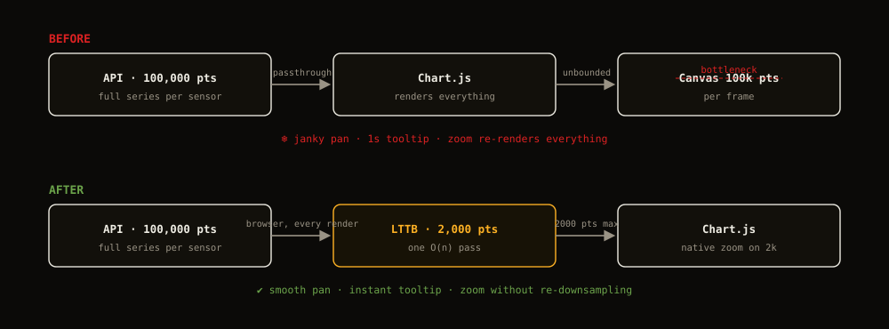
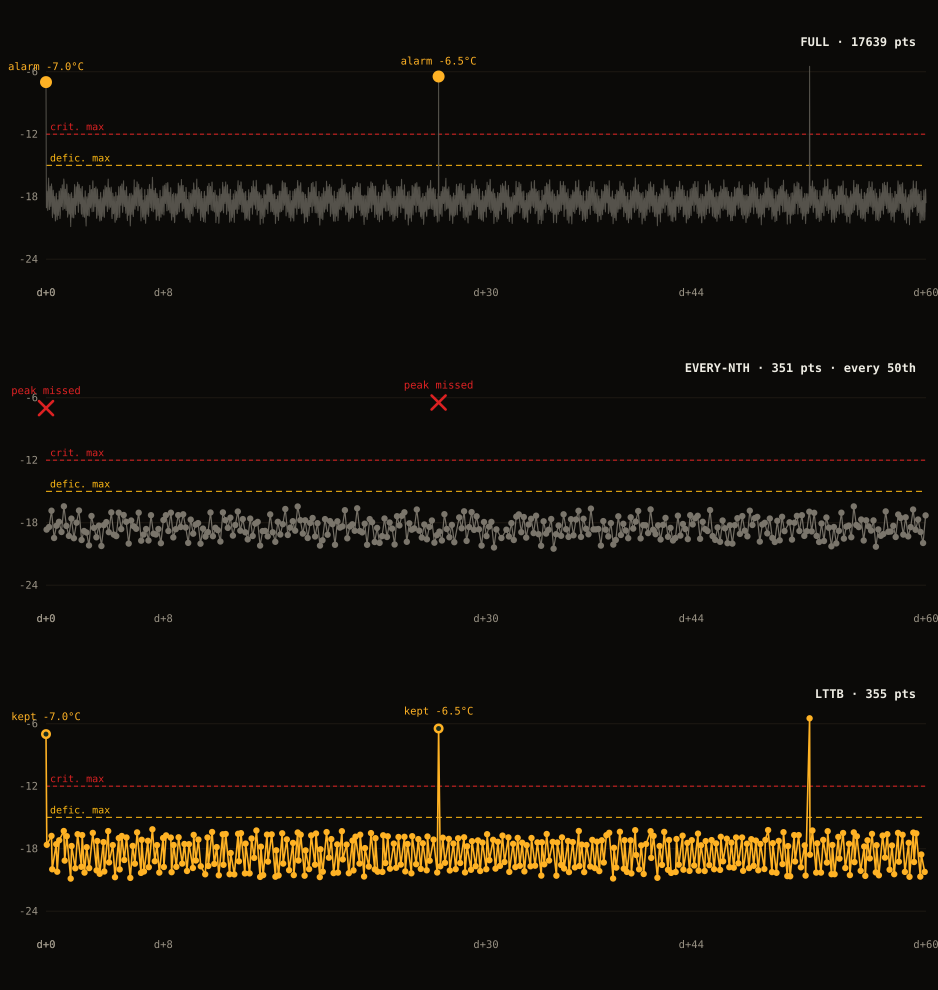
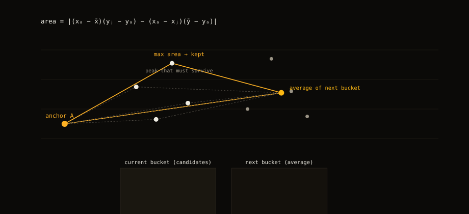
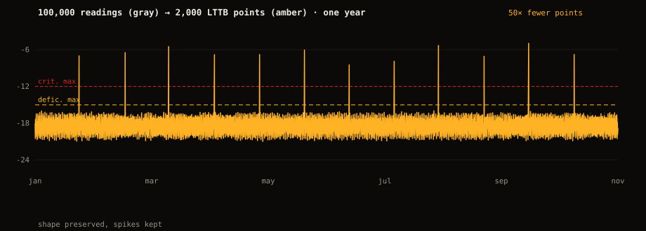

The problem: 100k points into Chart.js
ThermalTrack stores every reading from every thermal sensor. One sensor accumulates roughly 100k readings per semester. The chart endpoint returns the full series for the date range, so the browser had to draw all of it.
Chart.js with 100k points froze the dashboard. Panning dropped frames. Tooltips took a second. Zoom made it worse: the whole array went through the renderer again on every frame.

Why every Nth point fails
Dropping every Nth point kills the peaks. Temperature alarms live in the peaks. A one-minute spike over the critical threshold can be the only point in an hour that matters, and N-th sampling can skip it. Same 60 days, three samplings:

LTTB (Largest Triangle Three Buckets) picks the points the shape needs. It splits the series into buckets. For each bucket it keeps the point whose triangle with the previous anchor and the next bucket's average has the biggest area. O(n), one pass:
function downsampleLTTB(data: NumPoint[], threshold: number): NumPoint[] {
if (data.length <= threshold || data.length <= 3) return data;
const out: NumPoint[] = [data[0]];
const bucketSize = (data.length - 2) / (threshold - 2);
let a = 0;
for (let i = 1; i < threshold - 1; i++) {
const rangeStart = Math.floor((i - 1) * bucketSize) + 1;
const rangeEnd = Math.min(Math.floor(i * bucketSize) + 1, data.length);
const nextStart = Math.floor(i * bucketSize) + 1;
const nextEnd = Math.min(Math.floor((i + 1) * bucketSize) + 1, data.length);
if (nextStart >= nextEnd || rangeStart >= rangeEnd) continue;
let avgX = 0, avgY = 0, count = 0;
for (let j = nextStart; j < nextEnd; j++) {
if (data[j].y === null) continue;
avgX += data[j].x;
avgY += data[j].y;
count++;
}
if (count === 0) continue;
avgX /= count;
avgY /= count;
let maxArea = -1, maxIdx = rangeStart;
for (let j = rangeStart; j < rangeEnd; j++) {
if (data[a].y === null || data[j].y === null) continue;
const area = Math.abs(
(data[a].x - avgX) * (data[j].y - data[a].y) -
(data[a].x - data[j].x) * (avgY - data[a].y)
);
if (area > maxArea) { maxArea = area; maxIdx = j; }
}
out.push(data[maxIdx]);
a = maxIdx;
}
out.push(data[data.length - 1]);
return out;
}The result: 100k points become 2,000, and the spikes survive.

Downsample once, zoom for free
LTTB runs on the full series every time data changes, not on the visible window, not on zoom. The chart holds 2,000 points and Chart.js zooms natively over them.
Re-slicing on zoom end was the first version. It caused loops: zoom re-sampled, sampling shifted the data, the chart jumped. The comment in the code says it plainly: no re-downsample on zoom, Chart.js zooms naturally over the 2000 LTTB points, that avoids loops and inconsistencies.
Deep zoom over 2,000 points loses nothing you can see. The chart draws the points it has; the shape was already chosen. Recomputing on every frame would only add jitter.

Zoom without re-initializing
Zoom and pan run through chartjs-plugin-zoom on the x axis (wheel, drag, pinch). No re-init, same canvas, no animation pass. Details that matter:
- parsing: false. Timestamps are normalized to ms once, before Chart.js sees them. The library never parses a date.
- animation: false. No tween between renders.
- The y axis is fixed from the full dataset (plus thresholds), with 10% padding. It does not jump while you zoom. afterDataLimits forces the range back after zoom and pan.
- minRange is three times the smallest gap between samples. You can't zoom past the data's resolution.
- The x axis targets ~50 ticks and switches units by visible range: minute, hour, day.
Live data while zoomed
New readings arrive while the dashboard is open. The update handler re-runs LTTB on the full series for every dataset. If the user is zoomed, the x axis min/max stay untouched — the zoom survives, the canvas still gets 2,000 points. If not zoomed, the axis extends to the new range and thresholds span it.
Discrete sensors (door open/closed, compressor on/off) skip LTTB entirely. They have few points and the category axis needs every transition.
The same algorithm, server side
The browser fix was not enough. Old data keeps growing, and nobody needs the full 100k points for a sensor from three months ago.
A nightly job runs the same LTTB on readings older than 30 days and keeps 3,000 points per sensor, 20 sensors in parallel. It selects each sensor's old rows, runs LTTB, and deletes everything that did not survive with a single NOT IN. The database stores the compressed history; the client re-compresses every render.
Lessons
- Downsample once, at the data boundary. Anything earlier wastes work; anything per-frame causes loops.
- Keep the shape, not the cadence. LTTB keeps spikes; every-Nth keeps rhythm and loses events.
- One algorithm, two sides: the browser renders 2,000 points per dataset, the nightly job caps history at 3,000 per sensor.
- Precision costs. parsing: false and animation: false are free wins on a chart that updates constantly.
The whole fix is about 40 lines of LTTB. The dashboard stays interactive at any zoom level, and the chart endpoint still returns the full series, untouched.